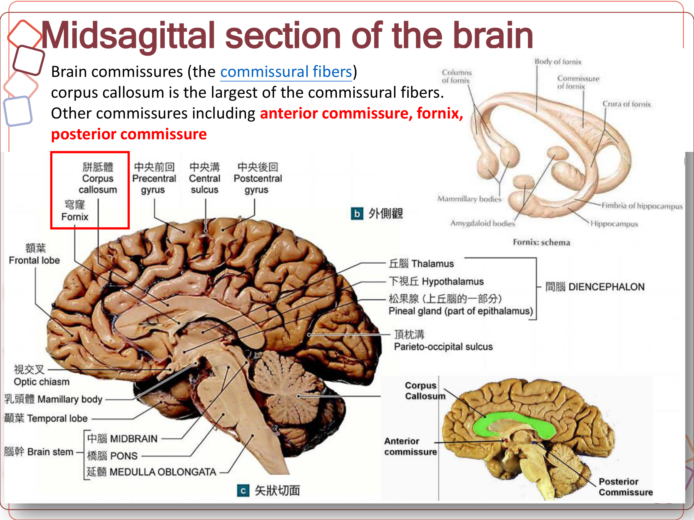
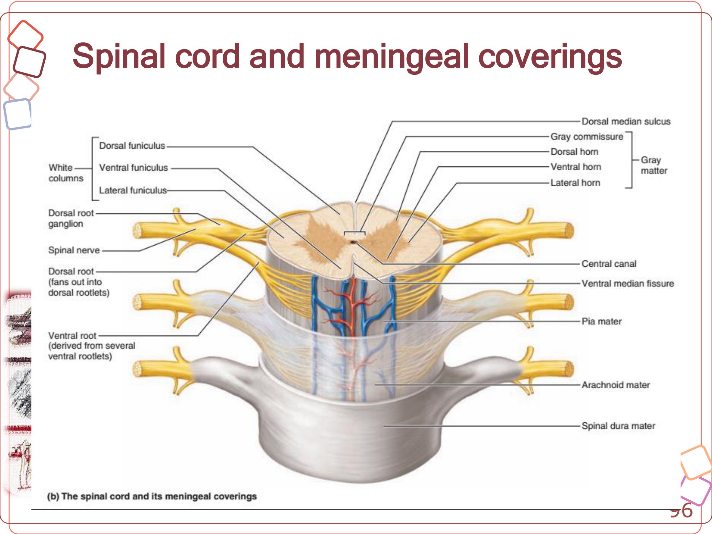
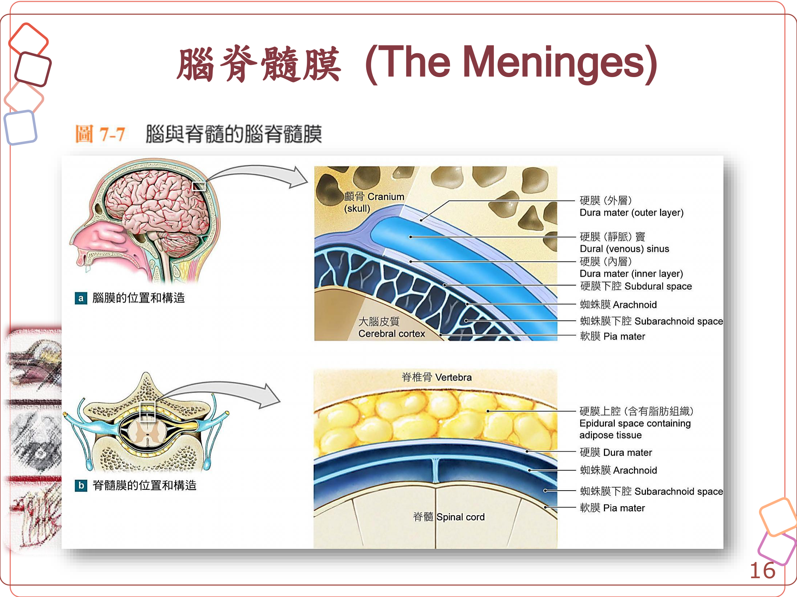
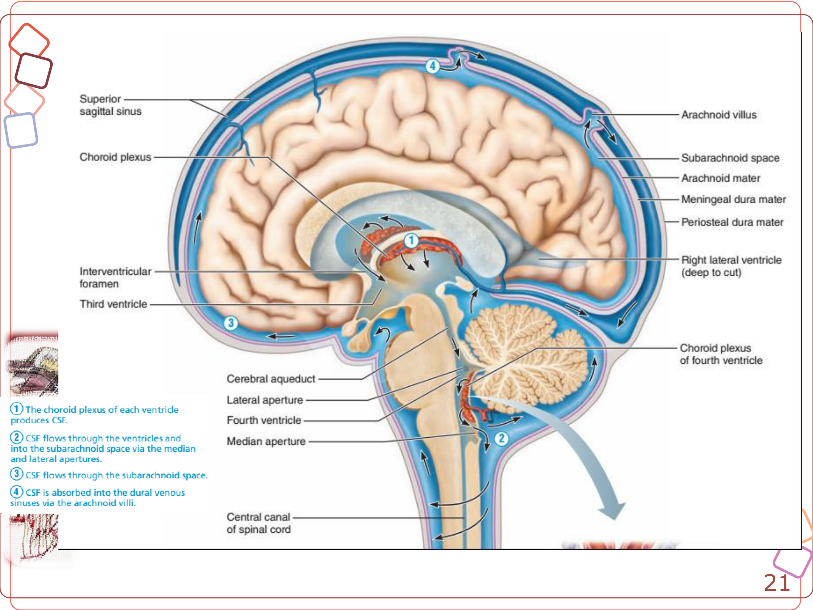
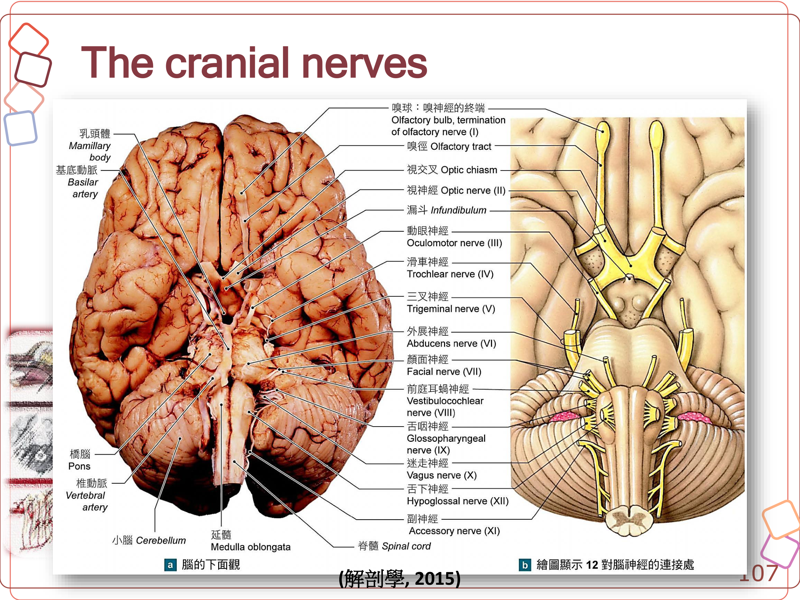

重點摘要
- CNS（腦＋脊髓）vs. PNS（顱神經＋脊神經＋神經節）是全篇最基本的分類骨架；PNS 再分感覺（傳入）與運動（傳出）分區，運動分區又分體神經系統（隨意支配骨骼肌）與自主神經系統（交感／副交感，非隨意支配心肌平滑肌腺體）。
- 灰質＝神經核／皮質（神經元胞體聚集處）；白質＝神經徑（軸突聚集處，因髓鞘而呈白色）；白質依走向與功能有 tract／lemniscus／decussation／funiculus／fasciculus／commissura 等命名慣例，理解字義比死背每條徑的名稱有效率。
- 腦部胚胎發育五分區（端腦／間腦／中腦／後腦／延腦）分別對應側腦室／第三腦室／中腦導水管／第四腦室，也對應不同顱神經核的分布位置——這套發育骨架是記憶整個腦部構造與定位顱神經起源的核心工具。
- 小腦病灶的臨床特徵是「協調異常但不會無力」：共濟失調（ataxia）、辨距不良（dysmetria，常為過度伸展 hypermetria）、意向性震顫（intention tremor），但不會造成 paresis（無力）——因為小腦不是運動的起始者而是協調與校正中樞，這是與大腦運動皮質或脊髓病灶鑑別的重要觀念。
- UMN／LMN 病灶的鑑別是神經學定位的核心架構：上運動神經元（UMN）病灶典型表現為反射增強（hyperreflexia）、無明顯肌肉萎縮；下運動神經元（LMN）病灶則表現為反射減弱或消失（hyporeflexia／areflexia）合併明顯肌肉萎縮。
- 延腦是「生命中樞」，內含調節心跳、血管張力、呼吸速率、嘔吐、咳嗽的神經核，同時也是皮質脊髓徑交叉（錐體交叉）發生的位置；小腦或後顱窩病灶造成顱內壓上升、波及延腦生命中樞時可能迅速致命，是重症神經病患的監控重點。
- CSF 循環路徑：脈絡叢分泌 → 側腦室 → 第三腦室 → 中腦導水管 → 第四腦室 → 蛛網膜下腔 → 蛛網膜絨毛回收入靜脈竇；臨床上最容易混淆的兩個穿刺部位是硬膜外腔（含脂肪，硬膜外麻醉注射處）與蛛網膜下腔（含 CSF，腦脊髓液採集／脊髓攝影注射處），兩者位置不同、用途也不同。
- 12 對顱神經依序對應腦幹分區（中腦：III、IV；橋腦／延腦：V–XII），是神經學檢查定位腦幹病灶的基礎；瞳孔光反射路徑（視網膜→視神經→頂蓋前區→動眼神經核→瞳孔括約肌）是最常用來評估視覺路徑與腦幹功能的基本反射。
中樞神經系統總論 CNS Overview
神經系統分為中樞神經系統（CNS：腦＋脊髓）與周邊神經系統（PNS：顱神經＋脊神經＋神經節），本節整理兩者的區分、神經系統的基本功能、灰質／白質的組成原則，以及腦部的胚胎發育分區——這是後面前腦、中腦、後腦、脊髓各節共用的基礎架構，建議先熟讀本節再往下讀。
中樞神經系統（CNS）vs 周邊神經系統（PNS）
腦（brain）＋脊髓（spinal cord），是神經系統的整合與控制中樞（integrative and control centers）。
顱神經（cranial nerves）＋脊神經（spinal nerves）＋神經節（ganglia），是CNS與身體其餘部位之間的通訊線路（communication lines）。
PNS 依功能再分為感覺（傳入）分區 sensory/afferent division（將訊息由受器傳向CNS）與運動（傳出）分區 motor/efferent division；運動分區又分為體神經系統（somatic nervous system，隨意支配骨骼肌）與自主神經系統（autonomic nervous system, ANS，非隨意支配心肌、平滑肌、腺體），ANS 再分為交感（sympathetic，動員身體因應活動）與副交感（parasympathetic，保存能量、促進休息期功能）兩個分支。
神經系統的三大功能
偵測身體內外環境的改變
解析內外在環境改變的意義
協調其他系統自主與非自主的反應
| 感覺功能細分 | 說明 |
|---|---|
| 外感覺 Exteroceptive | 接受來自環境的刺激，如聽覺、視覺、味覺、溫度、壓力、痛覺 |
| 本體感覺 Proprioceptive | 關節與肌肉的姿勢、位置感受 |
| 內感覺 Enteroceptive | 空腔器官牽張刺激、血壓（壓力受器 baroreceptors）、血液pH（化學受器 chemoreceptors） |
| 內臟感覺 Vegetative/Visceral | 內臟器官相關的感覺 |
運動功能分為體運動（somatomotor，骨骼肌）與內臟運動（visceromotor，內臟器官運動）兩大類，後者即自主神經系統的作用範圍。
灰質與白質 Grey Matter & White Matter
構成腦部的神經核（nuclei）、大腦與小腦的皮質（cortex），以及脊髓中央區域。灰質內的神經核可依神經元形態（如多極的錐體細胞、小腦的浦金氏細胞 Purkinje cell、顆粒細胞）、內在／投射神經元（intrinsic：短軸突侷限於單一核；projection：長且有髓鞘軸突形成白質徑）、神經衝動性質（興奮性／抑制性）、神經傳導物質種類（如膽鹼性、正腎上腺素性神經元）分類。
連接CNS內各中樞、也連接CNS與周邊的神經徑（tracts），脊髓中白質環繞在灰質外圍。主要由神經元間軸突（interneuronal axons）與部分感覺神經構成，因軸突外的髓鞘（myelin sheath，由寡突細胞 oligodendroglia 形成）而呈白色；纖維性星狀膠細胞（astrocytes）則提供支持並連接神經元與微血管。
白質纖維的命名術語
| 術語 | 意義 |
|---|---|
| Tract 徑 | 有明確起訖點的中樞神經纖維，如 tractus corticospinalis（皮質脊髓徑） |
| Lemniscus 蹄系 | 呈螺旋走向的徑 |
| Decussation 交叉 | 切換至身體對側 |
| Radiation 放射 | 呈放射狀擴散的徑，如視放射、聽放射 |
| Funiculus 索 | 緊密排列的徑，如脊髓的背索、腹索、外側索 |
| Fasciculus 束 | 較狹窄的徑 |
| Commissura 連合 | 連接CNS左右兩側的徑，如胼胝體 |
腦部的胚胎發育分區
神經管（neural tube）由頭端開始先分化出三個原始腦泡（primary brain vesicles）：前腦（prosencephalon）、中腦（mesencephalon）、後腦（rhombencephalon）；前腦與後腦再各自分化出兩個次級腦泡（secondary brain vesicles），最終發育為五大成體腦部區域：
| 原始腦泡 | 次級腦泡 | 成體構造 | 相關腦室 |
|---|---|---|---|
| 前腦 Prosencephalon | 端腦 Telencephalon | 大腦半球（皮質、白質、基底核） | 側腦室 |
| 間腦 Diencephalon | 視丘、下視丘、上視丘、視網膜 | 第三腦室 | |
| 中腦 Mesencephalon | （不再分化） | 中腦（腦幹） | 中腦導水管 |
| 後腦 Rhombencephalon | 後腦 Metencephalon | 橋腦＋小腦 | 第四腦室 |
| 延腦 Myelencephalon | 延腦（腦幹） |
這套發育分區也對應到顱神經核的分布：嗅神經（I）、視神經（II）與端腦／間腦相關；動眼、滑車神經（III、IV）源自中腦；三叉～舌下神經（V–XII）源自後腦（橋腦與延腦）。後面各節會依此順序介紹。
腦部大分區與概略功能
處理感覺訊息、協助推理與問題解決、調節自主神經／內分泌／運動功能（大腦＋間腦）
協助調節運動、處理聽覺與視覺訊息（視覺／聽覺反射中樞）
協助調節自主功能、轉送感覺訊息、協調運動、維持平衡（橋腦、延腦、小腦）

前腦 Forebrain：大腦與間腦
前腦（prosencephalon）包含端腦（telencephalon，即大腦 cerebrum）與間腦（diencephalon）。大腦負責思考、感覺、記憶與複雜運動控制；間腦則是感覺訊息轉接、自主神經與內分泌整合的樞紐。
端腦（大腦）的組成
大腦＝端腦（telencephalon）＋嗅腦（rhinencephalon）：
皮質（cortex，灰質）＋白質（white matter）＋基底核（basal nuclei）＋側腦室（lateral ventricle）。左右半球由縱裂（longitudinal fissure）分開。
與嗅覺及邊緣系統相關：嗅球（olfactory bulb）、嗅徑（olfactory tract／striae）、梨狀葉（piriform lobe）、中隔（septum）、海馬（hippocampus）。
大腦皮質分葉與功能區
| 腦葉 | 主要功能 |
|---|---|
| 額葉 Frontal lobe | 行為、初級運動皮質（precentral gyrus）、前運動皮質、前額葉 |
| 頂葉 Parietal lobe | 初級體感覺皮質（postcentral gyrus）、體感覺聯合區 |
| 顳葉 Temporal lobe | 行為、聽覺、平衡 |
| 枕葉 Occipital lobe | 視覺 |
犬腦的重要地標：犬大腦背側面的十字溝（cruciate sulcus）相當於靈長類的中央溝，標示初級運動皮質的位置；冠狀溝（coronal sulcus）則標示體感覺區的位置。初級運動皮質（precentral gyrus）與初級體感覺皮質（postcentral gyrus）各自具有身體部位的「地圖」（homunculus），代表區域大小與該部位神經支配密度成正比，而非實際體積。
基底核 Basal Nuclei（Basal Ganglia）
基底核是位於大腦白質深處的一群灰質核團，屬於錐體外運動系統（extrapyramidal motor system），協助調節不隨意的骨骼肌運動。
| 核團 | 說明 |
|---|---|
| 尾核 Caudate nucleus | 與被殼合稱紋狀體（striatum），參與運動程序學習、聯想學習 |
| 被殼 Putamen | 調節動作的準備與執行，使用GABA、乙醯膽鹼、腦啡 |
| 蒼白球 Globus pallidus | 接受紋狀體輸入，輸出至視丘與黑質，調節不隨意運動 |
| 帶狀核 Claustrum | 整合來自各皮質區的輸入 |
| 視丘下核 Subthalamic nucleus | 與蒼白球、黑質共同構成運動迴路 |
| 依核 Nucleus accumbens | 與嗅結節共同構成腹側紋狀體，涉及酬賞、動機、成癮 |
臨床連結：黑質（substantia nigra，中腦構造，見下節）的多巴胺神經元退化並投射至紋狀體，是人類巴金森氏症（Parkinson's disease）的病理基礎；基底核迴路的觀念有助於理解錐體外徑受損時出現的不隨意運動異常。
大腦白質纖維分類
連接同側半球內不同皮質區
連接左右兩半球，最大者為胼胝體（corpus callosum），另有前連合、穹窿、後連合
連接大腦皮質與下位中樞，如放射冠（corona radiata）與內囊（internal capsule）
皮質脊髓徑（corticospinal tract，UMN起點）的行進路徑：大腦皮質 → 內囊 → 放射冠 → 大腦腳（crus cerebri，中腦） → 橋腦 → 延腦錐體（pyramid） → 於延腦尾端交叉（decussation of pyramids） → 脊髓外側／腹側皮質脊髓徑，是理解上運動神經元（UMN）病灶定位的基礎路徑。
嗅腦與邊緣系統 Limbic System
嗅徑由嗅球發出後分為外側嗅徑（→梨狀葉）、內側嗅徑（→中隔）、中間嗅徑（→前連合）。邊緣系統則是掌管情緒、動機與記憶的功能性系統：
| 構造 | 功能 |
|---|---|
| 扣帶迴 Cingulate gyrus | 情緒／情感整合中心，調整心跳、血壓，處理認知與注意力的自律功能 |
| 海馬 Hippocampus | 短期記憶轉為長期記憶的鞏固、空間記憶（導航） |
| 穹窿 Fornix | 海馬的主要輸出徑，連接海馬與乳頭體 |
| 杏仁核 Amygdaloid body | 與下視丘、扣帶迴、海馬密切相關；涉及恐懼、攻擊、社交／交配行為 |
| 中隔區 Septal area | 自主神經系統的高等中樞 |
| 依核 Accumbens nucleus | 報酬、快樂與成癮相關功能 |
間腦 Diencephalon
間腦壁主要由視丘（thalamus）構成，兩側視丘之間常有丘腦間連合（interthalamic adhesion）相連，圍繞第三腦室。
幾乎所有感覺訊息（除嗅覺外）在送往大腦皮質前，都會在此轉接與整理（relay and processing centers）；也是大腦運動皮質與下位運動中樞（含小腦）之間的轉接站，並參與記憶處理。
自主神經系統的主要整合中樞，調節體溫、攝食、飲水、生理節律；經漏斗（infundibulum）以莖狀構造連接腦下垂體，兼具神經與內分泌整合功能。
| 間腦相關構造 | 說明 |
|---|---|
| 上視丘 Epithalamus | 含韁核（habenular nuclei）——調節多巴胺、血清素等單胺類神經傳導物質，連接前腦與中腦；以及松果腺（pineal gland）——分泌褪黑激素，調節生理節律 |
| 乳頭體 Mammillary body | 邊緣系統一部分，主司回憶性記憶；記憶訊息由海馬經穹窿傳至乳頭體 |
| 終板 Lamina terminalis | 構成第三腦室前壁，內含終板血管器（OVLT）——經由血管加壓素II受體調節血液滲透壓、控制腦下垂體釋放血管加壓素；終板與灰白節共同構成腦下垂體柄 |
| 灰白節 Tuber cinereum | 下視丘中腹側的隆起（含弓狀核），對腦下垂體前葉的調控至關重要——此處血管缺乏血腦障壁，可運輸下視丘釋放激素至腦下垂體前葉 |
腦下垂體 Pituitary Gland (Hypophysis)
經下視丘釋放激素經腦下垂體門脈系統（hypophyseal portal vessels）調控，分泌 ACTH、GH、TSH、LH、FSH、Prolactin。
下視丘（視上核、室旁核）神經元軸突直接延伸至此，釋放催產素（oxytocin）與血管加壓素（vasopressin/ADH）。
中腦 Mesencephalon (Midbrain)
中腦是腦幹中最短的一段，連接前腦與後腦，內含視覺／聽覺反射中樞、錐體外運動系統的重要核團，以及動眼、滑車神經（III、IV）核。中腦導水管（mesencephalic aqueduct）貫穿其中，連接第三與第四腦室。
中腦的三大分區
由左右各一對隆起構成四疊體（corpora quadrigemina）：前丘／上丘（rostral／superior colliculus）——視覺反射中樞；後丘／下丘（caudal／inferior colliculus）——聽覺傳導與反射中樞。
含紅核（red nucleus）、黑質（substantia nigra）、網狀結構（reticular formation）、動眼神經核（III）、滑車神經核（IV）、內側蹄系（medial lemniscus）、導水管周圍灰質（periaqueductal gray, PAG）。
大腦皮質下行運動纖維（含皮質脊髓徑）通過處，構成大腦腳底（basis pedunculi）的主要部分。
重要核團與功能
| 構造 | 功能 |
|---|---|
| 前丘 Rostral colliculus | 視覺反射：協調頭與眼球追蹤移動物體的動作（即使非有意識注視），其他脊椎動物同源構造稱視頂蓋（optic tectum） |
| 後丘 Caudal colliculus | 聽覺傳導與反射：接收聽覺訊息並傳至內側膝狀核（medial geniculate nucleus），也涉及驚嚇反射等反射性反應 |
| 紅核 Red nucleus | 屬錐體外運動系統，經紅核脊髓徑（rubrospinal tract）影響肢體屈肌活動；富含鐵質而呈紅色 |
| 黑質 Substantia nigra | 基底核相關構造，富含黑色素（多巴胺前驅物），軸突投射至被殼；退化與巴金森氏症相關 |
| 網狀結構 Reticular formation | 投射至視丘與大腦皮質，調節意識狀態（警醒／睡眠）；錐體外徑多分布於此 |
| 導水管周圍灰質 PAG | 投射至延腦中縫核，是下行疼痛調節（descending pain modulation）的主要控制中樞，也參與自主神經功能與對威脅的行為反應 |
| 頂蓋前區 Pretectal region | 視覺系統的皮質下構造，主司瞳孔光反射、視動反射（optokinetic reflex） |
瞳孔光反射（pupillary light reflex, PLR）路徑：視網膜 → 視神經（II）→ 頂蓋前區 → 動眼神經核（III，含副交感 Edinger-Westphal 核）→ 動眼神經 → 瞳孔括約肌收縮。PLR 是臨床神經學檢查評估視覺路徑與腦幹功能的基本反射之一。
臨床定位意義：中腦病灶常見瞳孔異常（如單側/雙側散大、對光反射喪失）與意識狀態改變（因網狀結構受損），是神經學檢查中用來初步定位腦幹病灶位置的重要線索。
後腦 Hindbrain：橋腦、延腦與小腦
後腦（rhombencephalon）分化為後腦（metencephalon：橋腦＋小腦）與延腦（myelencephalon：medulla oblongata）。此區含第四腦室大部分空間，並發出7對顱神經（VI–XII）。
橋腦 Pons
橋腦將小腦連結於腦幹之上，下端連接延腦，是大腦與小腦之間訊息中繼的重要橋樑。
- 含橫向橋腦纖維（transverse pontine fibers），構成中小腦腳（middle cerebellar peduncle），將大腦皮質下達的隨意運動訊息單向傳給小腦（經橋腦核轉接）
- 含 CN V–VII 相關神經核，並含皮質脊髓等投射纖維
- 與延腦呼吸中樞協同，調控呼吸速率與深度
小腦 Cerebellum
皮質（cerebellar cortex）：分子層、浦金氏細胞層（Purkinje cell）、顆粒細胞層；白質（arbor vitae，樹枝狀白質）；深部核團：頂核（fastigial）、居中核（interpositus：球狀核 globose＋栓狀核 emboliform）、齒狀核／外側核（dentate／lateral）。
蚓部（vermis）與兩側半球（hemispheres）；依原裂（primary fissure）分為前葉（rostral／anterior lobe）與後葉（caudal／posterior lobe），另有位於尾腹側的絨球小結葉（flocculonodular lobe，由絨球 flocculus＋小結 nodulus 組成）。
| 小腦分葉 | 功能 |
|---|---|
| 前葉 Rostral lobe | 肌肉張力調節（muscle tone regulation） |
| 後葉 Caudal lobe | 運動協調（movement coordination） |
| 絨球小結葉 Flocculonodular lobe | 前庭反射功能（vestibular reflex），與平衡相關 |
小腦三對腳 Cerebellar Peduncles
| 小腦腳 | 連接 | 功能 |
|---|---|---|
| 上（前）小腦腳 Superior／Rostral | 小腦↔中腦 | 傳出：將深部小腦核的指令經視丘轉送至大腦運動皮質 |
| 中小腦腳 Middle | 橋腦→小腦 | 傳入：單向傳遞由運動皮質經橋腦核轉接的隨意運動訊息 |
| 下（後）小腦腳 Inferior／Caudal | 延腦↔小腦 | 傳入：傳遞全身肌肉本體感覺與腦幹前庭核（平衡）訊息 |
臨床提醒：小腦病灶的典型神經學表現為共濟失調（ataxia）、辨距不良（dysmetria，常表現為過度伸展 hypermetria）、意向性震顫（intention tremor），但不會造成無力（paresis）——小腦本身不是運動的起始者，而是運動的協調與校正中樞，這是與大腦運動皮質或脊髓病灶鑑別的重要觀念。
延腦 Medulla Oblongata (Myelencephalon)
- 發出 7對顱神經（CN VI–XII），並含第四腦室的大部分空間
- 腹側可見左右對稱的錐體（pyramids），內含由運動皮質下行、走向脊髓的皮質脊髓徑纖維；錐體交叉（decussation of pyramids）發生在延腦尾端，是皮質脊髓徑由對側轉為同側支配的關鍵位置
- 斜方體（trapezoid body）：聽覺路徑的一部分，部分耳蝸核軸突在此交叉，協助聲音定位
- 橄欖核（olivary nucleus）：下橄欖核參與小腦運動學習；上橄欖核則屬聽覺系統一部分
- 含調節心跳、血管張力、呼吸速率、嘔吐、咳嗽等重要內臟功能的神經核，故延腦被稱為生命中樞（vital centers）
臨床警訊：延腦是維持心跳、呼吸等生命徵象的關鍵區域，若因小腦或後顱窩病灶造成的顱內壓上升導致小腦扁桃體疝脫（腦幹受壓）波及延腦生命中樞，可能迅速致命，是重症神經病患須密切監控的重點。
脊髓 Spinal Cord
脊髓上接延腦、下端逐漸變細，位於椎管內，是腦部與周邊神經之間最主要的傳導通路，也是許多反射弧（reflex arc）的中樞。本節整理脊髓節段、內部灰質／白質構造、主要上行與下行徑，以及臨床操作相關的定位觀念。
脊髓節段數（不同物種比較）
| 物種 | 頸髓 C | 胸髓 T | 腰髓 L | 薦髓 S | 尾髓 Cd | 總節數 |
|---|---|---|---|---|---|---|
| 犬 | 8 | 13 | 7 | 3 | 5 | 36 |
| 貓 | 8 | 13 | 7 | 3 | 5 | 36 |
| 牛 | 8 | 13 | 6 | 5 | 5 | 37 |
| 馬 | 8 | 18 | 6 | 5 | 5 | 42 |
| 豬 | 8 | 15／14 | 6／7 | 4 | 5 | 38 |
| 人 | 8 | 12 | 5 | 5 | 1（尾椎） | 31 |
脊髓節段數與脊椎骨數不完全對應——因脊髓在胎兒發育過程中生長速度較椎管慢，成犬脊髓實際終止於約 L6 附近，尾端的腰薦脊神經根需在椎管內繼續向尾側走行一段距離才穿出椎間孔，形成馬尾（cauda equina）；脊髓最尾端變細的部分稱脊髓圓錐（medullary cone／conus medullaris），其後延續為終絲（terminal filament）。
脊髓在頸膨大（cervical intumescence，約C6–T2，支配前肢）與腰膨大（lumbar intumescence，約L4–S2，支配後肢）處明顯變粗，因四肢的下運動神經元胞體集中於此。
脊髓橫切面：灰質與白質
背角（dorsal horn）：感覺訊息中繼（含中間神經元）；腹角（ventral horn）：含支配骨骼肌的下運動神經元胞體；外側角（lateral horn，胸腰髓與薦髓局部可見）：交感／副交感節前神經元胞體所在；中央有中央管（central canal）貫穿。
背索（dorsal funiculus）：主含上行本體感覺／精細觸覺徑；外側索（lateral funiculus）：含皮質脊髓徑、脊髓小腦徑等；腹索（ventral funiculus）：含腹側皮質脊髓徑、前庭脊髓徑等。左右白質經腹側白連合（ventral white commissure）相通。

主要上行徑（感覺）Ascending Tracts
| 徑名 | 傳遞訊息 | 路徑重點 |
|---|---|---|
| 背柱—內側蹄系徑 Dorsal Column–Medial Lemniscus | 意識性本體感覺、精細觸覺 | 薄束（fasciculus gracilis，後肢／下半身）與楔狀束（fasciculus cuneatus，前肢／上半身）上行至延腦的薄核／楔核後交叉，經內側蹄系至視丘、大腦皮質 |
| 脊髓視丘徑 Spinothalamic tract | 痛覺、溫度覺 | 初級傳入神經元進入脊髓後在該節段附近即交叉至對側，沿對側上行至視丘 |
| 脊髓小腦徑 Spinocerebellar tracts | 非意識性本體感覺 | 背側與腹側脊髓小腦徑，將肢體位置訊息送至小腦，供運動協調使用（不經視丘、不進入意識） |
主要下行徑（運動）Descending Tracts
| 系統 | 主要徑 | 功能 |
|---|---|---|
| 錐體系統 Pyramidal | 外側／腹側皮質脊髓徑 Lateral／Ventral corticospinal tract | 上運動神經元（UMN）發出的隨意運動指令；外側徑已於延腦錐體交叉（走對側），腹側徑則在到達支配節段前才交叉（走同側為主） |
| 錐體外系統 Extrapyramidal | 紅核脊髓徑 Rubrospinal | 影響肢體屈肌活動 |
| 網狀脊髓徑 Reticulospinal | 反射、移動、複雜動作、姿勢控制 | |
| 前庭脊髓徑 Vestibulospinal | 維持平衡、調節伸肌張力（抗重力） | |
| 橄欖脊髓徑 Olivospinal | 與小腦運動學習相關的下行調節 |
上／下運動神經元（UMN／LMN）觀念：UMN 起始於大腦皮質，經上述下行徑投射至脊髓；LMN 則是脊髓腹角神經元，直接支配骨骼肌。UMN病灶典型表現為肌張力／反射增強（hyperreflexia）、無明顯肌肉萎縮；LMN病灶則表現為肌張力／反射減弱或消失（hyporeflexia／areflexia）、明顯肌肉萎縮——這是神經學檢查中判斷病灶位置（脊髓／周邊神經）的核心架構。
脊髓相關臨床操作定位
| 操作 | 解剖定位 |
|---|---|
| 脊髓／硬膜外麻醉 Spinal／epidural anesthesia | 硬膜外腔（含脂肪組織）與蛛網膜下腔（含CSF），犬貓常用腰薦間隙進針 |
| 脊髓攝影 Myelography | 需將顯影劑注入蛛網膜下腔，觀察脊髓輪廓是否受壓迫 |
腦膜與腦脊髓液 Meninges & CSF
腦脊髓膜（meninges）是包覆腦與脊髓表面的三層特化膜，作用是提供穩定性並吸收震盪；腦脊髓液（CSF）則在腦室系統與蛛網膜下腔間循環，具緩衝保護與代謝交換功能。
腦脊髓膜三層構造
| 層次（由外而內） | 說明 |
|---|---|
| 硬膜 Dura mater | 顱腔內分為骨膜層與腦膜層兩層，兩層間形成硬膜（靜脈）竇（dural venous sinus）；脊髓的硬膜則為單層，與椎骨骨膜間留有含脂肪組織的硬膜上腔（epidural space）——即硬膜外麻醉注射處 |
| 蛛網膜 Arachnoid mater | 蛛網膜膜與蛛網膜小樑構成，與硬膜間為硬膜下腔（subdural space，潛在腔隙）；蛛網膜下方為蛛網膜下腔（subarachnoid space），內含腦脊髓液，是CSF採集／脊髓攝影的注射／取樣部位 |
| 軟膜 Pia mater | 緊貼腦與脊髓表面（含神經根鞘），血管豐富 |

腦室系統 Ventricular System
| 腦室 | 所在位置 |
|---|---|
| 側腦室 Lateral ventricles（一對） | 端腦（大腦半球）內 |
| 第三腦室 Third ventricle | 間腦正中，環繞丘腦間連合，經室間孔（interventricular foramen／Foramen of Monro）與側腦室相通 |
| 中腦導水管 Mesencephalic aqueduct | 中腦內，連接第三與第四腦室 |
| 第四腦室 Fourth ventricle | 橋腦／延腦與小腦之間 |
| 中央管 Central canal | 貫穿脊髓全長 |
腦脊髓液的產生與循環
產生CSF
回收入靜脈竇
CSF 由腦室內的脈絡叢（choroid plexus）持續分泌，經上述路徑流入蛛網膜下腔包覆整個腦與脊髓表面，最終經蛛網膜絨毛（arachnoid villi）回收吸收至硬膜靜脈竇（如背側矢狀竇）中。

臨床應用
| 操作／疾病 | 解剖基礎 |
|---|---|
| 小腦延髓池穿刺 Cisternal puncture | 枕骨與寰椎之間的小腦延髓池（cerebellomedullary cistern），CSF採集常用部位之一 |
| 腰椎穿刺 Lumbar puncture | 腰薦間隙，另一常用CSF採集部位，且脊髓已終止於此附近、風險較低 |
| 水腦症 Hydrocephalus | CSF循環受阻或分泌過多／吸收不良導致腦室擴大，玩具犬種先天性水腦症相對常見 |
| 腦膜炎 Meningitis | 腦脊髓膜發炎，臨床可見頸部疼痛、過敏、發燒等，CSF分析為重要診斷工具 |
顱神經 Cranial Nerves
12對顱神經由腦部（而非脊髓）直接發出，依序以羅馬數字I–XII命名，各自具有感覺、運動或混合功能。熟悉顱神經功能與腦幹起源位置，是神經學檢查定位病灶的基礎。
12對顱神經功能簡表
| 編號 | 名稱 | 性質 | 主要支配／功能 |
|---|---|---|---|
| I | 嗅神經 Olfactory | 特殊感覺 | 嗅覺（嗅上皮） |
| II | 視神經 Optic | 特殊感覺 | 視覺（視網膜） |
| III | 動眼神經 Oculomotor | 運動（含副交感） | 眼球大部分外眼肌、上眼瞼提肌；副交感支配瞳孔括約肌、睫狀肌 |
| IV | 滑車神經 Trochlear | 運動 | 眼球上斜肌 |
| V | 三叉神經 Trigeminal | 混合 | 感覺：眼眶、鼻腔、顏面皮膚、牙齒；運動：咀嚼肌（顳肌、咬肌、翼肌） |
| VI | 外展神經 Abducens | 運動 | 眼球外直肌（及部分縮回肌） |
| VII | 顏面神經 Facial | 混合 | 運動：顏面表情肌；感覺：舌前2/3味覺；副交感：淚腺、下頜下腺、舌下腺 |
| VIII | 前庭耳蝸神經 Vestibulocochlear | 特殊感覺 | 聽覺（耳蝸）與平衡（前庭） |
| IX | 舌咽神經 Glossopharyngeal | 混合 | 感覺：舌後1/3、頸動脈體化學／壓力受器；運動：咽部肌肉；副交感：腮腺 |
| X | 迷走神經 Vagus | 混合 | 感覺／運動／副交感：咽喉、胸腔與腹腔大部分內臟器官（心血管、呼吸、消化） |
| XI | 副神經 Accessory | 運動 | 支配斜方肌、臂頭肌等頸部／胸部肌肉 |
| XII | 舌下神經 Hypoglossal | 運動 | 舌肌 |

顱神經核的腦幹起源分布
CN I（嗅球）、CN II（視神經，發生學上屬間腦延伸）
CN III（動眼神經）、CN IV（滑車神經）
CN V（三叉神經，源自橋腦）；CN VI–XII 由橋腦尾端至延腦陸續發出
神經學定位價值：由於顱神經核沿腦幹由前至後依序排列，臨床神經學檢查中觀察哪些顱神經功能異常，可協助推測腦幹病灶大致落在中腦、橋腦或延腦的哪個節段，是「神經定位診斷（neurolocalization）」的重要工具之一。
常見臨床顱神經異常：顏面神經（VII）麻痺可見患側耳、唇下垂與淚液分泌減少；前庭耳蝸神經（VIII）病變則出現頭傾（head tilt）、眼球震顫（nystagmus）與共濟失調，須進一步鑑別周邊性與中樞性前庭疾病。
學習重點整理
考試／臨床實務角度的整理，複習前可先快速掃過本節，找出自己不熟的部分再回對應章節細讀。
練習題 Practice Quiz
涵蓋總論、前腦、中腦、後腦、脊髓、腦膜與腦脊髓液、顱神經各章節重點，先自己作答再點「顯示答案」核對，答錯的觀念請回對應章節重讀一次。
腦與脊髓屬於中樞神經系統（CNS）；PNS 是指顱神經、脊神經與神經節。
白質主要由神經元間軸突構成，軸突外的髓鞘（CNS內由寡突細胞形成）使其外觀呈白色，並提升傳導速度。
小腦屬於後腦，主司運動協調與平衡，並非邊緣系統的一部分；海馬、杏仁核、扣帶迴皆是邊緣系統的核心構造。
黑質位於中腦，其多巴胺神經元退化並影響紋狀體（尾核＋被殼）功能，是巴金森氏症的病理基礎；其餘選項皆屬端腦基底核構造。
下視丘視上核、室旁核神經元的軸突延伸至神經垂體（後葉），直接釋放催產素與血管加壓素（ADH）；前葉則是經腦下垂體門脈系統接受下視丘釋放激素的調控。
前丘（上丘）是視覺反射中樞，協調頭與眼球追蹤移動物體的動作；後丘（下丘）則負責聽覺傳導與反射。
小腦本身不直接發出運動指令，而是接收本體感覺、前庭與大腦運動皮質的訊息，負責協調、校正動作的時序與幅度。因此病灶造成的是動作協調不良（辨距不良、意向性震顫、共濟失調），而非運動指令的喪失，故不會出現無力。
皮質脊髓徑的纖維在延腦尾端的「錐體交叉（decussation of pyramids）」由對側轉為同側走行，形成外側皮質脊髓徑，是重要的解剖地標。
延腦含有心血管、呼吸、嘔吐、咳嗽等維持生命徵象所需的神經核，此區受壓迫（如小腦扁桃體疝脫）可能迅速危及生命。
CSF由位於腦室內的脈絡叢分泌；蛛網膜絨毛則是CSF最終回收吸收入靜脈竇的部位，兩者功能相反、易混淆。
脈絡叢分泌CSF → 側腦室 → （經室間孔）第三腦室 → 中腦導水管 → 第四腦室 → （經正中孔／外側孔）蛛網膜下腔 → 蛛網膜絨毛，回收吸收入硬膜靜脈竇（如背側矢狀竇）。
動眼神經（III）含副交感成分（Edinger-Westphal核），支配瞳孔括約肌與睫狀肌；視神經（II）是瞳孔光反射的感覺傳入端，而非傳出端。
反射減弱／消失合併明顯肌肉萎縮是下運動神經元（LMN）病灶的典型表現；UMN病灶則表現為肌張力與反射增強（hyperreflexia），且不會有明顯的早期肌肉萎縮。
硬膜外麻醉將藥物注射入含脂肪組織的硬膜上（外）腔；若誤入蛛網膜下腔（含CSF）則成為脊髓（蛛網膜下）麻醉，起效較快、風險也不同，臨床操作時須注意區分。